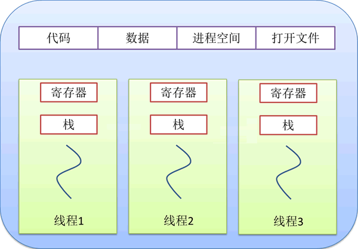

线程是什么
本节开始，我们将为您详细讲解如何编写一个“多线程”程序。本节，我们想了解一下什么是线程。
一台计算机所能利用的资源总是有限的，比如 CPU 在 1 秒钟之内最多执行 1 亿条指令，计算机一共有 1GB 的内存空间等等。因此，“如何提高计算机资源的利用率”是人们一直思考的问题，这个问题也一直带动着计算机硬件和软件的发展。
计算机诞生初期，任何安装任何操作系统和软件，只能运行机器指令，完成一些简单的数学运算。受到当时价格因素的制约，计算机并不普及，拥有者主要是政府、大型机构和公司，一台计算机往往由多个用户共同使用。计算机由专人负责操控，如果有用户想让计算机运行一段指令，必须先将指令输入到打孔卡（一种存储设备）中，然后交给计算机管理员，由计算机管理员负责将指令输入到计算机中执行。
随着对计算机资源利用率的要求不断提升，人们逐渐发现，计算机资源的利用率受管理员的影响非常大。例如，计算机每执行完一个任务，都要等待管理员输入下一个任务，期间很多硬件资源（比如 CPU、某些输入输出设备）都处于空闲状态。
为此，人们设计出了批处理操作系统，由它代替计算机管理员完成任务的切换工作。当计算机执行完某一任务时，批处理系统会自动将下一个要执行的任务输入到计算机中，缩减了任务切换所花费的时间，提高了计算机资源的利用率。
渐渐地人们又发现，批处理系统操控计算机执行的过程中，计算机的 CPU 资源仍经常处于空闲状态。举个例子，当执行中的程序进行 I/O 操作时，CPU 只能等待其 I/O 操作完成后继续工作，这段时间内 CPU 就处于空闲状态。
在批处理系统（又称单道批处理操作系统）的基础上，人们又设计出了功能更强大的多道批处理操作系统。和先前的系统相比，多道批处理系统主要有以下两点优势：
也就是说，多道批处理操作系统可以“同时”执行多个程序，这样的操作系统又称多任务操作系统。为了使多任务系统更高效地完成计算机资源的分配和回收，便于管理各个程序的执行过程，人们提出了“进程”的概念。
所谓进程，指的就是正在执行的应用程序。多任务操作系统可以控制各个进程的执行状态，例如终止某个正在执行的进程，启动某个暂停执行的进程等。操作系统负责为每个进程分配独立的内存空间和其它所需资源（例如 I/O 设备、文件等），进程执行完毕后，操作系统会将进程占用的资源全部回收。
早期的多任务操作系统，以进程为单位管理各个程序的运行以及计算机资源的分配和回收，进一步提高了计算机资源的利用率。但随着计算机硬、软件的发展，人们发现还可以做进一步优化，例如：
在计算机软、硬件快速发展，人们计算机运行效率的要求越来越高的大背景下，“线程”应运而生。
线程和进程之间的关系，类似于工厂和工人之间的关系，进程好比是工厂，线程就如同工厂中的工人。一个工厂可以容纳多个工人，工厂负责为所有工人提供必要的资源（电力、产品原料、食堂、厕所等），所有工人共享这些资源，每个工人负责完成一项具体的任务，他们相互配合，共同保证整个工厂的平稳运行。
每个进程执行前，操作系统都会为其分配所需的资源，包括要执行的程序代码、数据、内存空间、文件资源等。一个进程至少包含 1 个线程，可以包含多个线程，所有线程共享进程的资源，各个线程也可以拥有属于自己的私有资源。
如图所示，所有线程共享的进程资源有：
各个线程也可以拥有自己的私有资源，包括寄存器中存储的数据、线程执行所需的局部变量（函数参数）等。
我们通常将以“多线程”方式编写的程序称为“多线程程序”，将编写多线程程序的过程称为“多线程编程”，将拥有多个线程的进程称为“多线程进程”。
了解了什么是线程和多线程之后，我们正式开始学习如何编写多线程程序。
"线程"的起源
“线程”一词于 1967 年左右被首次提出，是计算机硬件和软件发展过程中诞生的产物。一台计算机所能利用的资源总是有限的，比如 CPU 在 1 秒钟之内最多执行 1 亿条指令，计算机一共有 1GB 的内存空间等等。因此，“如何提高计算机资源的利用率”是人们一直思考的问题，这个问题也一直带动着计算机硬件和软件的发展。
计算机诞生初期，任何安装任何操作系统和软件，只能运行机器指令，完成一些简单的数学运算。受到当时价格因素的制约，计算机并不普及，拥有者主要是政府、大型机构和公司，一台计算机往往由多个用户共同使用。计算机由专人负责操控，如果有用户想让计算机运行一段指令，必须先将指令输入到打孔卡（一种存储设备）中，然后交给计算机管理员，由计算机管理员负责将指令输入到计算机中执行。
随着对计算机资源利用率的要求不断提升，人们逐渐发现，计算机资源的利用率受管理员的影响非常大。例如，计算机每执行完一个任务，都要等待管理员输入下一个任务，期间很多硬件资源（比如 CPU、某些输入输出设备）都处于空闲状态。
为此，人们设计出了批处理操作系统，由它代替计算机管理员完成任务的切换工作。当计算机执行完某一任务时，批处理系统会自动将下一个要执行的任务输入到计算机中，缩减了任务切换所花费的时间，提高了计算机资源的利用率。
渐渐地人们又发现，批处理系统操控计算机执行的过程中，计算机的 CPU 资源仍经常处于空闲状态。举个例子，当执行中的程序进行 I/O 操作时，CPU 只能等待其 I/O 操作完成后继续工作，这段时间内 CPU 就处于空闲状态。
在批处理系统（又称单道批处理操作系统）的基础上，人们又设计出了功能更强大的多道批处理操作系统。和先前的系统相比，多道批处理系统主要有以下两点优势：
- 它将计算机的内存分成很多区域，每个区域都可以存储一个程序；
- 当执行的程序执行 I/O 操作时，操作系统会将 CPU 资源分配给其它等待执行的程序。
也就是说，多道批处理操作系统可以“同时”执行多个程序，这样的操作系统又称多任务操作系统。为了使多任务系统更高效地完成计算机资源的分配和回收，便于管理各个程序的执行过程，人们提出了“进程”的概念。
所谓进程，指的就是正在执行的应用程序。多任务操作系统可以控制各个进程的执行状态，例如终止某个正在执行的进程，启动某个暂停执行的进程等。操作系统负责为每个进程分配独立的内存空间和其它所需资源（例如 I/O 设备、文件等），进程执行完毕后，操作系统会将进程占用的资源全部回收。
早期的多任务操作系统，以进程为单位管理各个程序的运行以及计算机资源的分配和回收，进一步提高了计算机资源的利用率。但随着计算机硬、软件的发展，人们发现还可以做进一步优化，例如：
- 操作系统将 CPU 资源从一个进程分配给另一个进程时，开销较大；
- 各个进程占用的内存空间是相互独立的，大大增加了进程间通信的实现难度；
- 一个进程可能会执行多个任务，当某个任务因 I/O 操作暂停执行时，其他任务将无法执行。
在计算机软、硬件快速发展，人们计算机运行效率的要求越来越高的大背景下，“线程”应运而生。
什么是线程
我们知道，一个进程指的是一个正在执行的应用程序。线程对应的英文名称为“thread”，它的功能是执行应用程序中的某个具体任务，比如一段程序、一个函数等。线程和进程之间的关系，类似于工厂和工人之间的关系，进程好比是工厂，线程就如同工厂中的工人。一个工厂可以容纳多个工人，工厂负责为所有工人提供必要的资源（电力、产品原料、食堂、厕所等），所有工人共享这些资源，每个工人负责完成一项具体的任务，他们相互配合，共同保证整个工厂的平稳运行。
每个进程执行前，操作系统都会为其分配所需的资源，包括要执行的程序代码、数据、内存空间、文件资源等。一个进程至少包含 1 个线程，可以包含多个线程，所有线程共享进程的资源，各个线程也可以拥有属于自己的私有资源。
下图描述了进程和线程之间的关系：进程仅负责为各个线程提供所需的资源，真正执行任务的是线程，而不是进程。

图 1 进程和线程的关系
图 1 进程和线程的关系
如图所示，所有线程共享的进程资源有：
- 代码：即应用程序的代码；
- 数据：包括全局变量、函数内的静态变量、堆空间的数据等；
- 进程空间：操作系统分配给进程的内存空间；
- 打开的文件：各个线程打开的文件资源，也可以为所有线程所共享，例如线程 A 打开的文件允许线程 B 进行读写操作。
各个线程也可以拥有自己的私有资源，包括寄存器中存储的数据、线程执行所需的局部变量（函数参数）等。
什么是多线程
所谓多线程，即一个进程中拥有多（≥2）个线程，线程之间相互协作、共同执行一个应用程序。我们通常将以“多线程”方式编写的程序称为“多线程程序”，将编写多线程程序的过程称为“多线程编程”，将拥有多个线程的进程称为“多线程进程”。
如今，很多应用程序（软件）都是多线程程序，例如 QQ 具备同时和多人聊天的能力、迅雷具备同时下载多个资源的能力、很多杀毒软件可以同时开启杀毒、清理垃圾、电脑加速等功能。当进程中仅包含 1 个执行程序指令的线程时，该线程又称“主线程”，这样的进程称为“单线程进程”。
了解了什么是线程和多线程之后，我们正式开始学习如何编写多线程程序。
关注微信公众号「站长严长生」，在手机上阅读所有教程，随时随地都能学习。本公众号由C语言中文网站长运营，每日更新，坚持原创，敢说真话，凡事有态度。

微信扫描二维码关注公众号